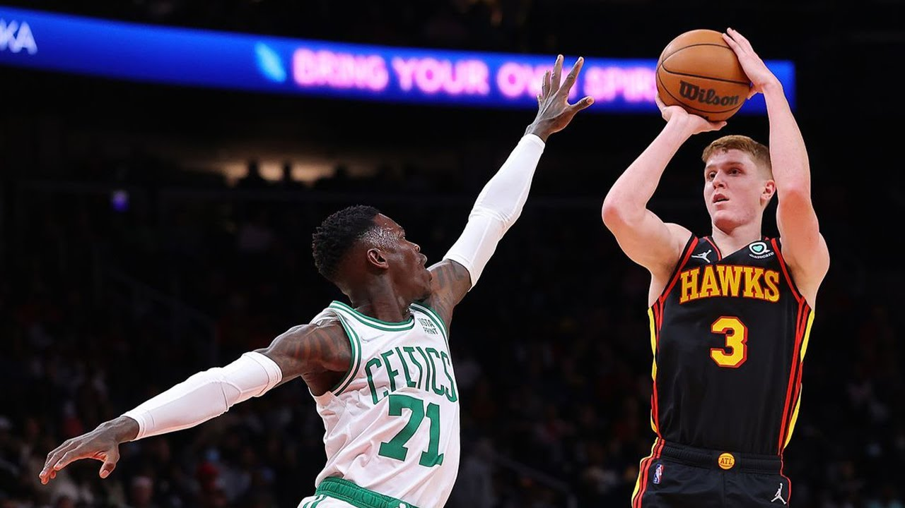
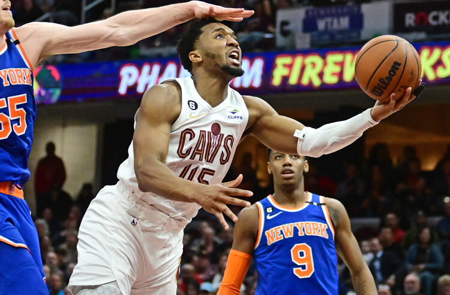

Jogando em casa, Celtics e Cavaliers conseguem vitórias importantes nos playoffs da NBA

Os Celtics tiveram dificuldade no primeiro quarto, mas administraram bem o jogo no segundo tempo e deram mais um passo em direção a próxima fase dos playoffs. O Jogo 3 acontece na sexta-feira, 21 de abril, às 20h, em Atlanta.
Jayson Tatum anotou um duplo-duplo de 29 pontos e 10 rebotes. Derrick White também teve uma noite de destaque e marcou 26 pontos. No lado dos Hawks, Dejounte Murray marcou 29 pontos, seis assistências e seis rebotes. Trae Young anotou 24 pontos.
Jogando em casa, os Cavaliers recebram os Knicks
Os Cavaliers receberam os Knicks e fizeram a festa da torcida na arena Rocket Mortgage FieldHouse. Os donos da casa dominaram o jogo até o fim e não deixaram o New York ter uma noite tranquila. O jogo 3 acontece na sexta-feira, 21 de abril, às 21h30, em Nova York.
O homem do jogo foi Darius Garland, do Cleveland, que antou 32 pontos e foi o cestinha do jogo. Donovan Mitchell foi o garçom do time, com 13 assistências e ainda marcou 17 pontos. No lado dos Knicks, Julius Randle anotou 22 pontos.
Próximos jogos da série
- Jogo 3: sexta-feira, 21 de abril às 21h30 em Nova York
- Jogo 4: domingo, 23 de abril às 14h em Nova York
- Jogo 5: quarta-feira, 26 de abril em Cleveland
- Jogo 6: sexta-feira, 28 de abril em Nova York
- Jogo 7: domingo, 30 de abril em Cleveland
Veja também
Draymond Green, dos Warriors, pisa no peito do Sabonis, dos Kings, durante o jogo.